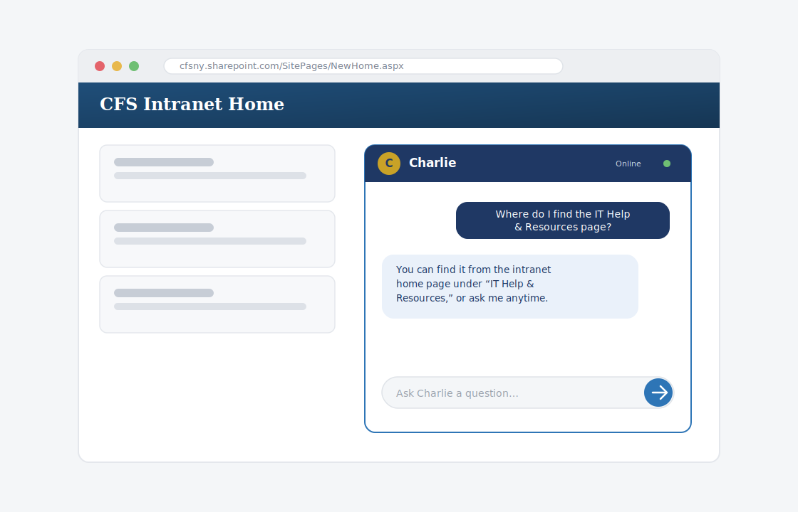

One quick tip. About a minute to read. Something you can use today.
This Week’s Tip
Charlie, our CFS AI assistant, is built right into the intranet home page — ask a question in plain language and get an answer in seconds, no Copilot license required.
Why it matters
Charlie draws directly on CFS’s own policies, procedures, and resources, so instead of digging through SharePoint or waiting on an email reply, you can just ask. Charlie is available to every staff member, whether or not you have a Microsoft Copilot license — it’s one of the easiest ways to get a quick, reliable answer at CFS.
How to ask Charlie
Charlie vs. Copilot Chat
These two are easy to mix up. Charlie is for CFS-specific questions — policies, procedures, where to find something. Copilot Chat (in Teams or Outlook) is for your own work — drafting an email, summarizing a document, brainstorming. Think “Charlie knows CFS, Copilot helps with your task.”

Charlie lives on the CFS intranet home page — just type your question and go.
Try asking Charlie this week
Open Charlie on the CFS intranet home page.
Past issues live on the CFS intranet — IT Help & Resources.
Have a topic idea or question? Email HelpDesk@cfsny.org.
— Jim Noriega and the CFS IT Team